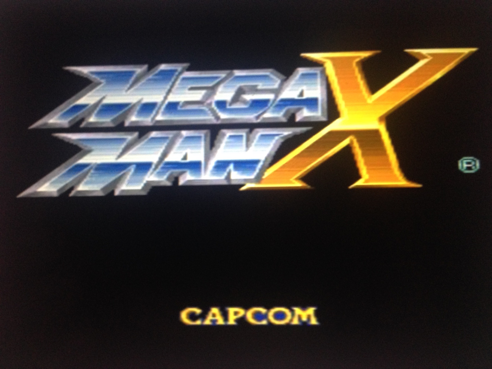
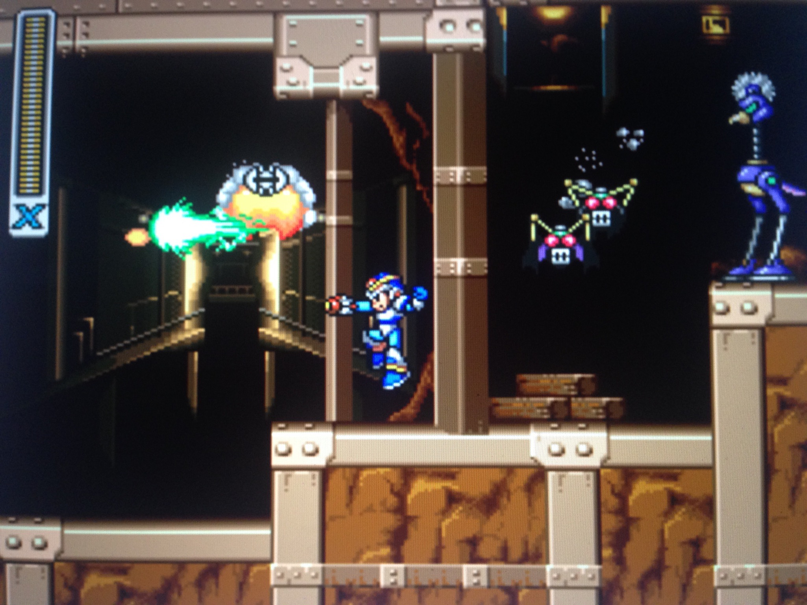

Sonic Adventure:
Sonic Adventure came out in 1997 on the Sega Dreamcast. It is the first video game I ever played. It is high-speed platformer, where you have 6 characters to choose from all with their own stories.
There are eleven stages however every character goes through them in a different order. This is a game I enjoy a lot. The controls are good and it is an easy game to pick up and play.
The music is fantastic and adds to experience. The problems with the game are mostly due to aging. The pathways are narrow so there are areas where you are going to run into walls.
The biggest issue with the game is that you have to play and beat the game with all six character to get the final story. One of them has nothing to do with platforming, it’s a fishing game.
I recommend this game however, it does archaic flaws.
Mega-Man X:
Mega-Man X debuted in 1993 on the Super Nintendo. It is the successor to the popular Mega-Man series. This is a jump and shot platformer with fast-paced gameplay.
There are 13 stages in full. You take control of Mega-Man X as he tried thwart Sigma’s evil plans. In this game you have to ability to get upgrades if you find them in the stages. There's a mechanic in the game is where you gain the abilities of the bosses that you defeat. This is well designed and challenging video game. The great thing about this game is that it teaches you how to play through the games mechanics and set pieces. It has a fantastic soundtrack. Its design makes it easy for newcomer to get the hang of. The only problem with this game is that since you can choose order of the stage you play. You are going to choosing levels until you find the one that is best for you. I defiantly recommend this game.

